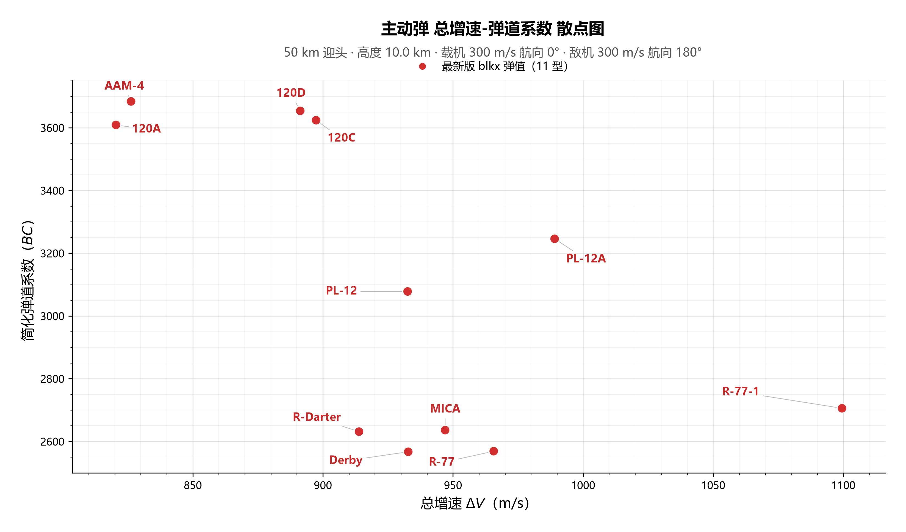
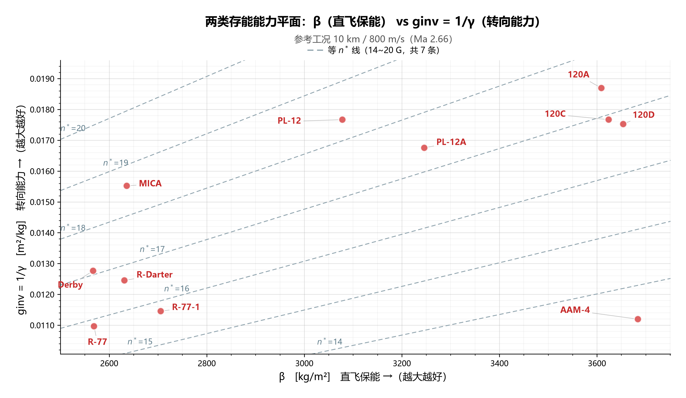

图1 · ΔV–β



图注
- 正在读图注…
图2 · β–ginv



图注
- 正在读图注…
图3 · ΔV–β–ginv
图3 是这张页面里转得动的三维视图（左键旋转 / 滚轮缩放 / 右键平移）： 它与图1、图2 共用左栏那套弹池选择，随手转、随手换。当前环境没把它跑起来时，这里只留这一行说明， 图1、图2 照常。
关于图3
- 横轴 = ΔV、纵轴 = β，第三根 1/γ 摆在正视图里看不见的那条底面轴上；三根轴各自按当前弹池自适应。
- 红/绿两团是角部光晕：红 = 三轴最小角（差角），绿 = 三轴最大角（好角），颜色由角部向白底渐变。
- 这张图与图1/图2 共用同一套弹池选择：左边选中哪几枚，这里就画哪几枚。